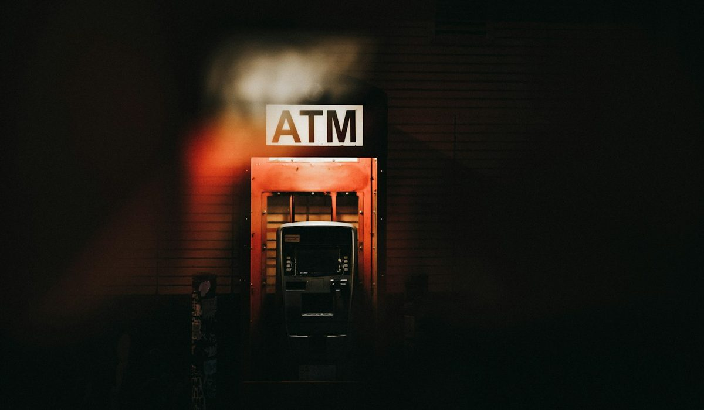

En bref
Le compte sans découvert le mieux noté est Nickel avec 8,6/10 (relevé de démonstration), parce que son compte de paiement ne peut pas passer en négatif et reste ouvert sans condition de revenus, même aux fichés, pour 25 €/an. Hello bank! avec Hello One (8,3/10) et N26 (8,2/10) offrent une carte à autorisation systématique pour 0 €. Sans découvert ne veut pas dire sans frais, un prélèvement rejeté reste facturé.
- Une commission d'intervention coûte jusqu'à 8 € par opération et 80 € par mois dans le cas général
- Hello One, N26 Standard et Revolut Standard sont gratuits et à autorisation systématique, Nickel coûte 25 € par an
- Un rejet de prélèvement est plafonné à 20 € et au montant du prélèvement, Nickel le facture 10 €
- Fortuneo Fosfo et BoursoBank Ultim sont gratuits sous condition d'activité, sinon 2 € ou 9 € par mois
Sommaire de ce comparatif
Nos critères et leur poids
Un compte sans découvert ne sert pas à faire des économies sur la carte. Il sert à arrêter de payer des frais qui tombent quand le solde passe sous zéro. Le prix pèse donc lourd dans notre barème, mais au sens large, cotisation comprise, conditions de gratuité et frais qui restent en cas d'incident.
| Critère | Poids | Ce qu'on regarde |
|---|---|---|
| Prix | 35 % | Cotisation, conditions de gratuité, frais de rejet et d'incident |
| Accessibilité | 25 % | Condition de revenus, fichés acceptés, justificatifs demandés |
| Services | 25 % | Carte à autorisation systématique publiée, plafonds, espèces, application |
| Ouverture | 15 % | Démarches, délai, lieu où l'on obtient la carte |
La note globale est la moyenne pondérée des quatre critères.
Un compte qui ne publie pas clairement de carte à autorisation systématique perd des points de services. C'est ce qui place Fortuneo et BoursoBank en bas du tableau, alors que leurs offres sont gratuites.
Le classement des comptes sans découvert
Les trois premiers sont séparés de 0,4 point. Le podium se joue sur un seul critère, l'accessibilité, parce que sur le reste les offres se ressemblent beaucoup.
01 Le plus accessibleAucun découvert possible, 25 €/an8,6/10
Le plus accessibleAucun découvert possible, 25 €/an8,6/10
Le plus accessibleAucun découvert possible, 25 €/an8,6/1002 La meilleure offre gratuiteHello One à 0 €, sans condition de revenus8,3/10
La meilleure offre gratuiteHello One à 0 €, sans condition de revenus8,3/10
La meilleure offre gratuiteHello One à 0 €, sans condition de revenus8,3/1003 L'alternative en ligneStandard à 0 €, Smart à 4,90 €/mois8,2/10
L'alternative en ligneStandard à 0 €, Smart à 4,90 €/mois8,2/10
L'alternative en ligneStandard à 0 €, Smart à 4,90 €/mois8,2/10Nickel passe devant grâce à l'accessibilité. Le compte s'ouvre sans condition de revenus, sans justificatif de domicile, et les fichés Banque de France y sont acceptés. Le solde ne peut pas devenir négatif, la carte refuse le paiement, il n'y a donc ni découvert ni agios. Sur le prix, Nickel perd nettement. À 25 € par an, il est battu par cinq offres gratuites de ce tableau.
Hello bank! prend la deuxième place avec Hello One, gratuite et sans condition de revenus. Sa contrainte tient aux plafonds, 1 000 € de paiements par mois et 400 € de retraits par semaine, ce qui suffit pour un budget serré mais coince vite un ménage qui paie ses courses et ses factures par carte. Hello bank! et Nickel appartiennent tous deux au groupe BNP Paribas.
N26 complète le podium avec son offre Standard à 0 €, sans condition de revenus. Revolut arrive juste derrière à 8,1/10 avec l'application la plus riche du panel. Chez les deux néobanques, comme chez Hello bank!, l'ouverture reste soumise à l'acceptation du dossier, ce qui compte pour une personne fichée.
Le tableau comparatif des 7 comptes
Chaque ligne correspond à l'offre d'entrée de gamme de l'établissement. La colonne « Découvert possible » indique si une carte à autorisation systématique est annoncée sur cette offre.
| Compte | Note /10 | Prix par an | Découvert possible | Condition de gratuité | Le point fort |
|---|---|---|---|---|---|
| Nickel ClassicNotre choix | 8,6 | 25 € | Non, autorisation systématique | Aucune, 25 € pour tous | Ouvert aux fichés, sans justificatif de domicile |
| Hello bank!, Hello One | 8,3 | 0 € | Non, autorisation systématique | Aucune condition de revenus | Gratuit, adossé au groupe BNP Paribas |
| N26 Standard | 8,2 | 0 € | Non, autorisation systématique | Aucune condition de revenus | Une gamme qui monte jusqu'à Metal |
| Revolut Standard | 8,1 | 0 € | Non, autorisation systématique | Aucune condition de revenus | L'application la plus complète |
| La Banque Postale, Formule Simplicité | 7,9 | 12 € | Non, carte Réalys à autorisation systématique | Réservée à la clientèle fragile | Frais d'incident plafonnés à 20 € par mois |
| Fortuneo Fosfo | 7,7 | 0 € | Non publié | 1 paiement ou retrait par mois, sinon 2 € par mois | 2 000 € de paiements par mois |
| BoursoBank Ultim | 7,6 | 0 € | Non publié | 1 paiement par mois, sinon 9 € par mois | Gratuite sans condition de revenus |
Offres d'entrée de gamme, tarifs publiés par les établissements ou relevés dans la presse spécialisée. Notes et tarifs, relevé de démonstration de la rédaction, octobre 2026.

Trois enseignements sortent du tableau. Le premier, l'absence de découvert n'est plus une rareté. Hello One, N26, Revolut et la Formule Simplicité de La Banque Postale l'offrent aussi, et cinq comptes du tableau affichent 0 €. Le deuxième, la gratuité a parfois une condition d'usage. Chez Fortuneo, sans un paiement ou un retrait dans le mois, le compte coûte 2 €. Chez BoursoBank, sans paiement mensuel, il coûte 9 €, soit 108 € sur une année d'oubli. Le troisième, seul Nickel accepte les fichés de façon publiée, ce qui justifie sa première place malgré son prix.
Sans découvert ne veut pas dire sans frais
Un compte sans découvert supprime les agios et les commissions liées au solde négatif. Il ne supprime pas tout. Un prélèvement qui arrive sur un compte vide est rejeté, et ce rejet se paie, chez Nickel comme ailleurs.
| Frais | Montant | Plafond ou règle |
|---|---|---|
| Commission d'intervention, cas général | 8 € par opération | 80 € par mois au plus |
| Commission d'intervention, offre clientèle fragile | 4 € par opération | 20 € par mois et 200 € par an au plus |
| Frais d'incident, client fragile sans l'offre | 25 € par mois au plus | Commissions comprises, 9 catégories de frais |
| Rejet de prélèvement, règle générale | 20 € au plus | Jamais plus que le montant du prélèvement |
| Rejet de prélèvement chez Nickel | 10 € | La moitié du plafond légal |
| Frais d'incident, Formule Simplicité | 20 € par mois au plus | 200 € par an au plus |
Plafonds réglementaires et plaquettes tarifaires publiées. Notes et tarifs, relevé de démonstration de la rédaction, octobre 2026.
Prenons un mois difficile avec quatre paiements par carte sans provision dans une banque classique. Ils passent, le compte bascule en négatif et la banque peut prélever 32 € de commissions d'intervention, en plus des agios. Sur un compte à autorisation systématique, ces quatre paiements sont simplement refusés à la caisse. C'est désagréable, mais ça ne coûte rien.
Le découvert coûte cher parce qu'il est invisible au moment du paiement. Une carte qui dit non à la caisse coûte zéro euro et règle le problème avant qu'il n'arrive sur le relevé.
Reste le cas des espèces. Nickel facture 3 % le dépôt en point de vente, soit 15 € pour 500 € déposés. Pour quelqu'un qui reçoit une partie de ses revenus en liquide, ce coût peut dépasser la cotisation annuelle en deux mois.
Comment choisir un compte sans découvert
Si vous êtes fiché ou sans justificatif de domicile
Nickel. C'est la seule offre du tableau qui accepte publiquement les fichés Banque de France. La pré-inscription se fait en ligne en 5 minutes environ, puis la carte et le RIB se récupèrent dans l'un des plus de 8 600 points de vente revendiqués, ou arrivent à domicile.
Si vous voulez payer zéro euro
Hello One de Hello bank!, gratuite sans condition de revenus. Si ses plafonds vous gênent, N26 Standard et Revolut Standard sont aussi à 0 €, avec une application plus riche chez Revolut.
Si votre banque vous a déjà classé client fragile
Demandez-lui l'offre clientèle fragile, plafonnée à 3 € par mois. À La Banque Postale, la Formule Simplicité coûte 1 € par mois et limite les frais d'incident à 20 € par mois, un filet de sécurité qu'aucune néobanque ne publie.
Si vous utilisez votre carte tous les jours
Fortuneo Fosfo ou BoursoBank Ultim restent gratuits tant que vous payez au moins une fois par mois. Vérifiez sur la plaquette tarifaire si un découvert peut être accordé, puis demandez qu'il ne le soit pas.
Notre verdict
Nickel est le compte sans découvert le mieux noté avec 8,6/10, grâce à une accessibilité qu'aucun concurrent ne publie. Il est pourtant battu sur le prix par Hello bank! et N26, gratuits et eux aussi à autorisation systématique, qui le suivent à 0,3 et 0,4 point.
Si votre priorité est d'ouvrir un compte malgré un fichage, prenez Nickel. Si votre priorité est de ne rien payer, prenez Hello One, ou N26 Standard si les plafonds de Hello bank! vous gênent. Si votre banque vous reconnaît comme client fragile, demandez son offre spécifique avant de partir.
Questions fréquentes
Quel est le meilleur compte bancaire sans découvert en 2026 ?
Nickel obtient la meilleure note de notre classement avec 8,6/10, parce qu'il accepte les fichés et ne peut pas passer en négatif, pour 25 € par an. Hello bank! avec Hello One (8,3/10) et N26 Standard (8,2/10) offrent la même absence de découvert gratuitement, avec une ouverture soumise à l'acceptation du dossier.
Un compte sans découvert évite-t-il tous les frais bancaires ?
Non. Il supprime les agios et les commissions liées au solde négatif, mais un prélèvement rejeté reste facturé. Le rejet est plafonné à 20 € et au montant du prélèvement, Nickel le facture 10 €.
Qu'est-ce qu'une carte à autorisation systématique ?
C'est une carte qui vérifie le solde du compte avant chaque paiement ou retrait et refuse l'opération si la provision manque. Hello One, N26 Standard, Revolut Standard, Nickel et la carte Réalys de La Banque Postale fonctionnent ainsi.
Combien coûte un découvert dans une banque classique ?
En plus des agios, la banque peut facturer une commission d'intervention de 8 € par opération, dans la limite de 80 € par mois. Pour un client qui bénéficie de l'offre clientèle fragile, elle tombe à 4 € par opération, 20 € par mois et 200 € par an.
Existe-t-il un compte sans découvert gratuit ?
Oui. Hello One de Hello bank!, N26 Standard et Revolut Standard sont à 0 € sans condition de revenus. Fortuneo Fosfo et BoursoBank Ultim sont gratuits si vous utilisez la carte chaque mois, sinon ils coûtent 2 € ou 9 € par mois.
Comment sont notés les comptes de ce classement ?
Les notes sont un relevé de démonstration de la rédaction sur cinq critères, accessibilité, prix, ouverture, services et note globale. Dans ce classement des comptes sans découvert, le prix pèse 35 %, l'accessibilité 25 %, les services 25 % et l'ouverture 15 %, la note globale étant leur moyenne pondérée. Nickel obtient 8,6/10, Hello bank! 8,3/10 et N26 8,2/10.
Notre méthode
Ce comparatif repose sur des données publiques, vérifiables une par une, et sur des critères affichés avant le classement.
- Les tarifs sont relevés dans les plaquettes tarifaires et les pages officielles des établissements, frais de tenue de compte et de carte compris
- Les conditions d'ouverture (revenus, âge, justificatifs, délai) sont vérifiées sur le parcours d'ouverture de chaque offre
- Les plafonds réglementaires (frais d'incident, offre clientèle fragile, droit au compte) sont ceux publiés par la Banque de France et service-public.fr
- Les avis clients sont lus sur les stores d'applications et Trustpilot, en retenant les motifs récurrents plutôt que la note seule
- Chaque critère est noté sur 10 et la grille de notation est identique d'un comparatif à l'autre